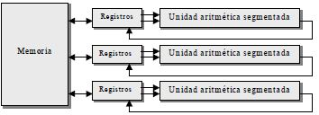

La Unidad de Procesamiento
(CPU) controla el
funcionamiento del computador
y lleva a cabo sus funciones de
procesamiento de datos.
Frecuentemente se le llama
procesador.
Un procesador, incluye tanto
registros visibles por el usuario
como registros de
control/estado.
Constituida por
La Unidad Central de Proceso está constituida
internamente por:
La unidad de control
La unidad de control le indica al resto del sistema como llevar a cabo las instrucciones de un
programa. Comanda las señales electrónicas entre la memoria y la unidad aritmético-lógica, y
entre el CPU junto a los dispositivos de E/S.
Para organizar un procesador se deben tomar en cuenta los siguientes aspectos:

Unidad aritmetica logica
Recibe los datos sobre los que efectúa
operaciones de cálculo y
comparaciones.
Toma decisiones
lógicas (determina si una afirmación es
correcta o falsa mediante reglas del
algebra de Boole) y devuelve luego el
resultado. Todo ello bajo supervisión
de la unidad de control.

Procesador
La ALU lleva a cabo el verdadero
cálculo o procesamiento de datos.
La unidad de control controla la
transferencia de datos e
instrucciones así a dentro y así
afuera del procesador, y el
funcionamiento de la ALU. Además
la figura muestra una memoria
interna mínima, que consta de un
conjunto de posiciones de
almacenamiento llamadas
registros.

Un registro es una memoria que esta ubicada en el procesador y se encuentra en el nivel más alto en la jerarquía de memoria, por lo tanto tiene una alta velocidad pero con poca capacidad para almacenar datos que va desde los 4 bits hasta los 64 bits dependiendo del procesador que se utilice. Los datos que almacena son los que se usan frecuentemente.

Un registro visible al usuario es aquél que
puede ser referenciado por medio del
lenguaje máquina que ejecuta la CPU.
Permiten al programador de lenguaje
máquina o de ensamblador minimizar las
referencias a memoria principal por medio
de la optimización del uso de registros.
Clasificación
1.Uso de general
AX, AH, AL (Acumulador): a menudo conserva el
resultado temporal después de una operación
aritmética o lógica.
BX, BH, BL (Base): Se utiliza para guardar la
dirección base de listas de datos en la memoria.
CX, CH, CL (Contador): Contiene el conteo para
ciertas instrucciones de corrimientos y
rotaciones, de iteraciones en el ciclo loop y
operaciones repetidas de cadenas.
DX, DH, DL (Datos): Contiene la parte más
significativa de un producto después de una
multiplicación; la parte más significativa del
dividendo antes de la división.
Son aquellos que pueden guardar tanto datos como
direcciones.
2.Datos
Un CPU puede funcionar con datos en
uno de tres modos: entre dos
registros, entre registros y una
ubicación de Memoria de acceso al
azar (RAM) que pueden ser asignados
por el programador a diversas
funciones. En algunos casos son de
propósito general y pueden ser
empleados por cualquier instrucción
de máquina que lleve a cabo
operaciones sobre los datos.
3.Direcciones
Para que un CPU pueda
almacenar y recuperar datos
en RAM, debe tener la
dirección de la memoria de la
información. Esas operaciones
que implican RAM usan
registros de dirección de
memoria. EL CPU no realiza
aritmética en estos registros;
en cambio, los usa para ubicar
datos que necesita.
4.Codigos de condición
También conocidos como
indicadores o flags. Los
códigos de condición, son bits
activados por el procesador
como resultado
de determinadas operaciones.
5.Indice
Un CPU no puede hacer matemáticas en
registros de datos, aunque puede hacerlo
indirectamente con un registro de índice. Éste
trabaja con los registros de datos, permitiendo
a un programa procesar hilos de información
eficazmente.
Registro SI: El registro índice fuente de 16
bits es requerido por algunas operaciones
con cadenas de caracteres. El SI está
asociado con el registro DS.
Registro DI: El registro índice destino
también es requerido por algunas
operaciones con cadenas de caracteres. El
DI está asociado con el registro ES.
6.Segmento
• CS (Código): Tiene la dirección lógica
del segmento en que se encuentra el
código de un programa.
• DS (Datos): Tiene la dirección lógica del
segmento en que se encuentran los
datos estáticos de un programa.
• ES (Extra): Este registro se utiliza en
ciertas operaciones del microprocesador
para el manejo de cadenas.
• SS (Pila): Tiene la dirección lógica del
segmento en que se encuentran la pila
del sistema. La pila no puede ser mayor
a un segmento.
 7.Apuntadores
7.Apuntadores
Los registros SP (apuntador de pila) y BP (apuntador
base) están asociados con el registro SS y permiten al
sistema acceder a datos en el segmento de la pila.
• SP (Apuntador de pila): Contiene el
desplazamiento con respecto al segmento
de pila del tope de la pila del programa.
• BP (Apuntador de base): Contiene el
desplazamiento con respecto al segmento
de pila de datos almacenados en la pila de
un programa.
• IP (Apuntador de instrucciones): Contiene
siempre el desplazamiento con respecto
al segmento de código de la localidad de
memoria que contiene la siguiente
instrucción que va a ejecutar el
microprocesador.
8.Banderas
Es un registro de 16 bits, de
los cuales nueve sirven para
indicar el estado actual de la
máquina y el resultado del
procesamiento.
La tabla
contiene 16 posiciones (de 0 a
15), que son los 16 bits del
registro de banderas,
numeradas de derecha a
izquierda. La posición 0 la
encontraremos a la derecha y
la posición 15 a la izquierda.
9.instrucción
Se denomina ciclo de instrucción a la secuencia de
acciones que realiza la CPU (más específicamente la
Unidad de Control) para lograr ejecutar una instrucción
del programa almacenado en memoria. Un ciclo de
instrucción típico tiene 5 pasos característicos:
-Fetch: consiste en leer la próxima
instrucción a ejecutarse en la memoria.
- Decode: analiza el código binario de la
instrucción para determinar qué se debe
realizar.
- Read: en este paso se accede a memoria
para traer los operandos.
- Execute: es la ejecución de la operación
por parte de la ALU sobre los operandos.
- Write: se escribe el resultado en el
destino indicado en la instrucción.

Son utilizados por la unidad de control para controlar el funcionamiento del procesador y por programas privilegiados del sistema operativo para controlar la ejecución de programas. Hay diversos registros del procesador que se emplean para controlar su funcionamiento.

TIPOS
Registro de datos
Guardan valores de datos
numéricos, como son los
caracteres o pequeñas
órdenes
Registro de memoria de datos
Es un registro que se
encuentra en el
procesador y que
está conectado al
bus de datos.
Registro de direciones
Guardan direcciones
que son usadas para
acceder a la memoria
principal o primaria,
que solemos conocer
como ROM o RAM.
Divisiones
Registro de bandera o "Flags"
Lo encontramos en los
procesadores Intel con
arquitectura X86.
2 sucesores:
- EFLAGS, con 32 bits
de ancho.
- RFLAGS, con 64 bits
de ancho.
Registro de coma flotante
La coma flotante es
una representación,
en forma de fórmula,
de números reales de
distintos tamaños
que sirve para
realizar operaciones
aritméticas.
Registros constantes
Su cometido es
guardar valores
de sólo lectura
como son el 0, 1
ó π.
REGISTROS DE COMA
FLOTANTE
LOS REGISTROS DE ESTADO SE DIVIDE EN:
DIVISIÓN

ORGANIZACIÓN DE REGISTROS EN ALGUNOS PROCESADORES


Es también llamado ciclo de fetch-and-execute o ciclo de fetchdecode-execute es
el período que tarda la unidad central de proceso (CPU) en ejecutar una instrucción
de lenguaje máquina.
Cada instrucción del juego de instrucciones de una CPU puede requerir diferente
número de ciclos de instrucción para su ejecución. Un ciclo de instrucción está
formado por uno o más ciclos máquina.

Es fundamental en el funcionamiento de una computadora. A continuación, describo brevemente cada una de sus etapas:
1.Traer la instrucción (FETCH):
- Se obtiene la siguiente instrucción desde la memoria principal.
- La instrucción se almacena en un registro especial dentro del CPU.
2. Decodificar la instrucción (DECODE):
- En esta etapa, se interpreta la instrucción obtenida.
- Se identifica el modo de direccionamiento y la ubicación de los datos a tratar (memoria, registro o instrucción directa).
3. Carga de Parámetros:
- Se ejecuta la lectura de los datos necesarios para la instrucción.
- Estos datos se cargan en registros o se preparan para su uso.
4. Ejecutar (EXECUTE):
- La instrucción se ejecuta en la ALU (Unidad Aritmético-Lógica) o se accede a la memoria.
- Realiza la tarea indicada, como sumar, restar, almacenar información o extraer datos.
5. Almacenar:
- El resultado obtenido tras la ejecución se almacena en la memoria o en registros específicos.
- Por ejemplo, el resultado de una operación matemática o un índice de éxito al acceder a información de un archivo.
6. Actualizar PC (Program Counter):
- El registro PC se actualiza con la siguiente dirección de memoria a ejecutar.
- Este proceso se repite constantemente durante el funcionamiento de la computadora.
La segmentación, también conocida como pipelining, es un método para aumentar el rendimiento de sistemas electrónicos digitales, especialmente microprocesadores. Se basa en dividir las tareas en etapas y procesarlas en paralelo. El nombre proviene de la analogía con un oleoducto: se divide en tramos y se impulsa el flujo de datos sin interrupciones. En programación, los cálculos se sincronizan con el reloj para reducir la ruta crítica (el tramo más lento). La ventaja es que, una vez el canal está lleno, los resultados de cada comando se obtienen sin latencia extra.
Es una especificación que detalla las instrucciones que una CPU puede entender y ejecutar. Incluye tipos de datos, instrucciones, registros y arquitectura de memoria. Existen tres tipos principales: CISC (Complex Instruction Set Computer), RISC (Reduced Instruction Set Computer) y SISC (Specific Instruction Set Computer). La ISA se diferencia de la microarquitectura, que implementa las instrucciones.
Diseñados originalmente para el procesamiento de Gráficos, con múltiples procesadores vectoriales sencillos, compoartiendo la misma memoria, la cual puede ser accedida por el CPU.

1. Inmediato (Immediate):
- El valor del operando se especifica directamente en la instrucción.
- Ejemplo: `ADD R1, #10` suma el valor inmediato 10 al contenido del registro R1.
2. Directo (Direct):
- La dirección de memoria del operando se especifica directamente en la instrucción.
- Ejemplo: `LOAD R2, [100]` carga el valor almacenado en la dirección de memoria 100 en el registro R2.
3. Indirecto (Indirect):
- La dirección de memoria del operando se obtiene indirectamente a través de un registro o puntero.
- Ejemplo: `LOAD R3, [R2]` carga el valor almacenado en la dirección de memoria apuntada por el contenido
del registro R2 en el registro R3.
4. Basado en Registro (Register-based):
- La dirección de memoria del operando se calcula sumando un desplazamiento a un registro base.
- Ejemplo: `LOAD R4, [R5+10]` carga el valor almacenado en la dirección de memoria calculada sumando 10 al contenido del registro R5 en el registro R4.
5. Indexado (Indexed):
- La dirección de memoria del operando se calcula sumando un desplazamiento a un registro índice.
- Ejemplo: `LOAD R6, [R7+R8]` carga el valor almacenado en la dirección de memoria calculada sumando el contenido del registro R8 al contenido del registro R7 en el registro R6.
6. Relativo (Relative):
- Se utiliza en instrucciones de salto o branch.
- La dirección de salto se calcula sumando un desplazamiento relativo a la dirección de la siguiente instrucción.
- Ejemplo: `JUMP [PC+20]` realiza un salto a la dirección de memoria calculada sumando 20 al contenido del contador de programa (PC).
En informática, los modos de direccionamiento son las diferentes maneras de especificar un operando dentro de una instrucción en lenguaje ensamblador.
Un modo de direccionamiento especifica la forma de calcular la dirección de memoria efectiva de un operando mediante el uso de la información contenida en registros y/o constantes,
contenida dentro de una instrucción de la máquina o en otra parte.
No existe una forma generalmente aceptada de nombrar a los distintos modos de direccionamiento.
En particular, los distintos autores y fabricantes de equipos pueden dar nombres diferentes para el modo de hacer frente al mismo,
o los mismos nombres, a los diferentes modos de direccionamiento.
Además, un modo de direccionamiento que en una determinada arquitectura se trata como un modo de direccionamiento,
puede representar la funcionalidad que en otra arquitectura está cubierto por dos o más modos de direccionamiento.